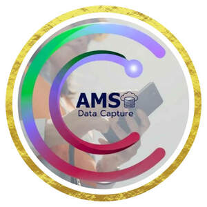

Trade Mark Journal No.2025/041 10 October 2025
UK00004270150 26 September 2025 (9)

- Class 9
- Data capture apparatus; Real-time data processing apparatus; Data loggers; Data communications software; Computer software to enable retrieval of data; Computer software to enable searching and retrieval of data; Intelligent gateways for real-time data analysis; Data processing systems; Data processing programmes; Data processing equipment; Apparatus for recording data; Data storage devices; Data processing terminals; Data collection apparatus; Data compression software; Data mining software; Data conversion apparatus; Data exchange units; Data encryption apparatus; Data communications hardware; Data communications apparatus; Data transmission networks; Telecommunications software; Telecommunications networks; Telecommunications cables; Telecommunications equipment; Telecommunications devices; Telecommunications apparatus; Telecommunication cables; Telecommunication equipment; Telecommunication switches; Telecommunication apparatus; Telecommunications transmitters; Computer software for inter-network accounting in the telecommunications field; Fibre optic telecommunications apparatus; Digital telecommunications apparatus; Telecommunication transmitters; Electrical telecommunications apparatus; Electronic telecommunications apparatus; Computer software for the collection of positioning data; Computer software for the processing of positioning data; Computer software for the dissemination of positioning data; Computer hardware for the collection of positioning data; Utility software; Utility programmes for performing computer system diagnostics; Downloadable computer utility software; Electric power distribution apparatus; Electric power analysers; Electricity storage apparatus; Electric power supply units; Electric power converters; Voltage regulators for electric power; Electric power controllers; Apparatus for diagnosing electrical power installations; Utility, security and cryptography software; Computer utility programmes for data compression; Computer utility programmes for computer maintenance; Meters; Electricity meters; Gas meters; Water meters; Energy management software; Software for monitoring utility consumption; Apparatus for measuring utility usage; Financial management software; Educational software; Language learning software; Personal productivity software; Travel planning software; Downloadable software for virtual currency wallets; Social networking application software; Recipe management software; Weather forecasting application software; all the aforesaid for consumer and residential utility management and data capture, excluding industrial process control systems; Software testing software; Computer software packages; Workflow software; Software applications; Graphics software; Interface software; Server-side software; Interactive software; Mobile data receivers; Application development software; Computer software to enable the searching of data; Computer hardware for the collection of positioning data; Data processing software for graphic representations; Virtual reality software for telecommunications; Mobile data apparatus; Internet of Things [IoT] gateways; Mobile communication terminals; Computer software to enable the provision of electronic media via the Internet; Internet servers; Internet access software; Web site development software; Graphical user interface software; Computer programs and software for image processing used for mobile phones; Digital dashboard software; Downloadable mobile applications for the management of information; Application server software; Operating software; Computer graphics software; Mobile software; Communications software; Computer software for database management; Data retrieving devices; Data buffers; Data transmitters; Data processing apparatus; Data carriers; Computer programmes for use in telecommunications; Downloadable mobile applications for the management of data; Computer software for use as an application programming interface (API); Data processing software.
CloudNet Technologies Limited